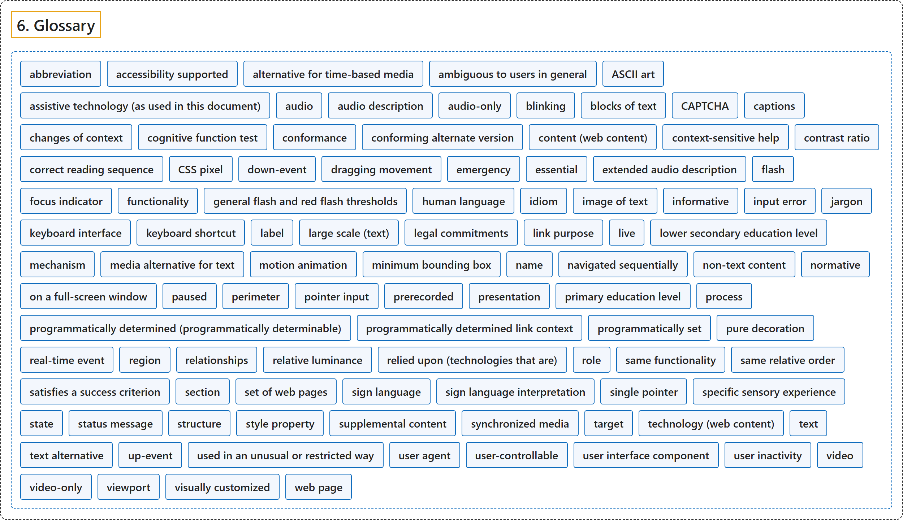

6. Glossary
Classification

Glossary
| Term | Definition | 中文翻译 | Source |
|---|---|---|---|
| 6. Glossary 术语表 |
(context) "The new success criteria may reference new terms that have also been added to the glossary and form part of the normative requirements of the success criteria." | （语境）新的成功标准可能引用同样已加入术语表的新术语，这些术语构成成功标准规范性要求的一部分。 | World Wide Web Consortium, 2024, "New Features in WCAG 2.2" |
| abbreviation 缩写 |
"shortened form of a word, phrase, or name where the abbreviation has not become part of the language" | 词、短语或名称的缩短形式，且该缩写尚未成为语言的一部分 | World Wide Web Consortium, 2024, section 6 |
| accessibility supported 无障碍支持 |
"supported by users' assistive technologies as well as the accessibility features in browsers and other user agents" | 受用户的辅助技术支持，也受浏览器和其他用户代理中的无障碍功能支持 | World Wide Web Consortium, 2024, section 6 |
| alternative for time-based media 基于时间的媒体的替代 |
"document including correctly sequenced text descriptions of time-based visual and auditory information and providing a means for achieving the outcomes of any time-based interaction" | 包含按正确顺序排列的、对基于时间的视觉和听觉信息的文字描述的文档，并提供实现任何基于时间的交互结果的手段 | World Wide Web Consortium, 2024, section 6 |
| ambiguous to users in general 对一般用户含糊不清 |
"the purpose cannot be determined from the link and all information of the web page presented to the user simultaneously with the link (i.e., readers without disabilities would not know what a link would do until they activated it)" | 从链接以及与链接同时呈现给用户的网页全部信息中无法确定其目的（即没有残障的读者在激活链接之前也不知道它会做什么） | World Wide Web Consortium, 2024, section 6 |
| ASCII art ASCII 艺术 |
"picture created by a spatial arrangement of characters or glyphs (typically from the 95 printable characters defined by ASCII)" | 由字符或字形的空间排列构成的图画（通常用 ASCII 定义的 95 个可打印字符） | World Wide Web Consortium, 2024, section 6 |
| assistive technology (as used in this document) 辅助技术（本文档所用） |
"hardware and/or software that acts as a user agent, or along with a mainstream user agent, to provide functionality to meet the requirements of users with disabilities that go beyond those offered by mainstream user agents" | 作为用户代理、或与主流用户代理一起工作的硬件和/或软件，提供功能以满足残障用户的需求，超出主流用户代理所提供的 | World Wide Web Consortium, 2024, section 6 |
| audio 音频 |
"the technology of sound reproduction" | 声音再现的技术 | World Wide Web Consortium, 2024, section 6 |
| audio description 音频描述 |
"narration added to the soundtrack to describe important visual details that cannot be understood from the main soundtrack alone" | 添加到音轨中的旁白，用来描述仅凭主音轨无法理解的重要视觉细节 | World Wide Web Consortium, 2024, section 6 |
| audio-only 纯音频 |
"a time-based presentation that contains only audio (no video and no interaction)" | 一种基于时间的呈现，只包含音频（没有视频，没有交互） | World Wide Web Consortium, 2024, section 6 |
| blinking 闪动 |
"switch back and forth between two visual states in a way that is meant to draw attention" | 在两种视觉状态之间来回切换，目的是引起注意 | World Wide Web Consortium, 2024, section 6 |
| blocks of text 文本块 |
"more than one sentence of text" | 多于一句的文本 | World Wide Web Consortium, 2024, section 6 |
| CAPTCHA 验证码 |
"initialism for "Completely Automated Public Turing test to tell Computers and Humans Apart"" | “全自动区分计算机和人类的公开图灵测试”的首字母缩写 | World Wide Web Consortium, 2024, section 6 |
| captions 字幕 |
"synchronized visual and/or text alternative for both speech and non-speech audio information needed to understand the media content" | 同步的视觉和/或文字替代，针对理解媒体内容所需的语音和非语音音频信息 | World Wide Web Consortium, 2024, section 6 |
| changes of context 上下文的改变 |
"major changes that, if made without user awareness, can disorient users who are not able to view the entire page simultaneously" | 重大改变，如果在用户不知情时发生，会让无法同时查看整个页面的用户迷失方向 | World Wide Web Consortium, 2024, section 6 |
| cognitive function test 认知功能测试 |
"A task that requires the user to remember, manipulate, or transcribe information. Examples include, but are not limited to:" | 要求用户记忆、处理或转录信息的任务。例子包括但不限于： | World Wide Web Consortium, 2024, section 6 |
| conformance 一致性 |
"satisfying all the requirements of a given standard, guideline or specification" | 满足全部要求，针对给定的标准、指南或规范 | World Wide Web Consortium, 2024, section 6 |
| conforming alternate version 符合要求的替代版本 |
"version that 1. conforms at the designated level, and 2. provides all of the same information and functionality in the same human language, and 3. is as up to date as the non-conforming content, and" | 这样的版本：1. 在指定级别符合要求，且 2. 以同一人类语言提供全部相同的信息和功能，且 3. 与不符合要求的内容同样及时更新，且 | World Wide Web Consortium, 2024, section 6 |
| content (web content) 内容（网络内容） |
"information and sensory experience to be communicated to the user by means of a user agent, including code or markup that defines the content's structure, presentation, and interactions" | 通过用户代理传达给用户的信息和感官体验，包括定义内容结构、呈现和交互的代码或标记 | World Wide Web Consortium, 2024, section 6 |
| context-sensitive help 上下文相关帮助 |
"help text that provides information related to the function currently being performed" | 提供与当前正在执行的功能相关信息的帮助文本 | World Wide Web Consortium, 2024, section 6 |
| contrast ratio 对比度 |
"(L1 + 0.05) / (L2 + 0.05), where L1 is the relative luminance of the lighter of the colors, and L2 is the relative luminance of the darker of the colors." | (L1 + 0.05) / (L2 + 0.05)，其中 L1 是较亮颜色的相对亮度，L2 是较暗颜色的相对亮度。 | World Wide Web Consortium, 2024, section 6 |
| correct reading sequence 正确的阅读顺序 |
"any sequence where words and paragraphs are presented in an order that does not change the meaning of the content" | 任何这样的顺序：词和段落按某个次序呈现，该次序不改变内容意义 | World Wide Web Consortium, 2024, section 6 |
| CSS pixel CSS 像素 |
"visual angle of about 0.0213 degrees" | 约 0.0213 度的视角 | World Wide Web Consortium, 2024, section 6 |
| down-event 按下事件 |
"platform event that occurs when the trigger stimulus of a pointer is depressed" | 指针的触发刺激被按下时发生的平台事件 | World Wide Web Consortium, 2024, section 6 |
| dragging movement 拖动操作 |
"an operation where the pointer engages with an element on the down-event and the element (or a representation of its position) follows the pointer until an up-event" | 一种操作：指针在按下事件时与元素接合，元素（或其位置的表示）跟随指针直到抬起事件 | World Wide Web Consortium, 2024, section 6 |
| emergency 紧急情况 |
"a sudden, unexpected situation or occurrence that requires immediate action to preserve health, safety, or property" | 突然、意外的情况或事件，需要立即采取行动以保护健康、安全或财产 | World Wide Web Consortium, 2024, section 6 |
| essential 必不可少 |
"if removed, would fundamentally change the information or functionality of the content, and information and functionality cannot be achieved in another way that would conform" | 如果去掉，会从根本上改变内容的信息或功能，并且这些信息和功能无法以其他符合要求的方式实现 | World Wide Web Consortium, 2024, section 6 |
| extended audio description 扩展音频描述 |
"audio description that is added to an audiovisual presentation by pausing the video so that there is time to add additional description" | 通过暂停视频以便有时间加入更多描述而添加到视听呈现中的音频描述 | World Wide Web Consortium, 2024, section 6 |
| flash 闪烁 |
"a pair of opposing changes in relative luminance that can cause seizures in some people if it is large enough and in the right frequency range" | 一对相反的相对亮度变化，如果幅度足够大且频率在特定范围内，可能使某些人癫痫发作 | World Wide Web Consortium, 2024, section 6 |
| focus indicator 焦点指示器 |
"pixels that are changed to visually indicate when a user interface component is in a focused state" | 被改变的像素，用来在视觉上指示用户界面组件处于聚焦状态 | World Wide Web Consortium, 2024, section 6 |
| functionality 功能 |
"processes and outcomes achievable through user action" | 通过用户操作可以实现的过程和结果 | World Wide Web Consortium, 2024, section 6 |
| general flash and red flash thresholds 一般闪烁和红色闪烁阈值 |
"a flash or rapidly changing image sequence is below the threshold (i.e., content passes) if any of the following are true:" | 闪烁或快速变化的图像序列在下列任一条件为真时低于阈值（即内容通过）： | World Wide Web Consortium, 2024, section 6 |
| human language 人类语言 |
"language that is spoken, written or signed (through visual or tactile means) to communicate with humans" | 以口头、书面或手语（通过视觉或触觉方式）与人交流的语言 | World Wide Web Consortium, 2024, section 6 |
| idiom 习语 |
"phrase whose meaning cannot be deduced from the meaning of the individual words and the specific words cannot be changed without losing the meaning" | 含义无法从单个词的含义推出的短语，且其中的具体词不能更换，否则失去含义 | World Wide Web Consortium, 2024, section 6 |
| image of text 文本图像 |
"text that has been rendered in a non-text form (e.g., an image) in order to achieve a particular visual effect" | 以非文本形式（例如图像）呈现的文本，目的是实现特定的视觉效果 | World Wide Web Consortium, 2024, section 6 |
| informative 信息性 |
"for information purposes and not required for conformance" | 为提供信息而给出，不是一致性所必需 | World Wide Web Consortium, 2024, section 6 |
| input error 输入错误 |
"information provided by the user that is not accepted" | 用户提供的、未被接受的信息 | World Wide Web Consortium, 2024, section 6 |
| jargon 行话 |
"words used in a particular way by people in a particular field" | 特定领域的人以特定方式使用的词 | World Wide Web Consortium, 2024, section 6 |
| keyboard interface 键盘接口 |
"interface used by software to obtain keystroke input" | 软件用来获取按键输入的接口 | World Wide Web Consortium, 2024, section 6 |
| keyboard shortcut 键盘快捷键 |
"alternative means of triggering an action by the pressing of one or more keys" | 通过按一个或多个键来触发动作的替代方式 | World Wide Web Consortium, 2024, section 6 |
| label 标签 |
"text or other component with a text alternative that is presented to a user to identify a component within web content" | 文本或带文本替代的其他组件，呈现给用户以标识网络内容中的某个组件 | World Wide Web Consortium, 2024, section 6 |
| large scale (text) 大号（文本） |
"with at least 18 point or 14 point bold or font size that would yield equivalent size for Chinese, Japanese and Korean (CJK) fonts" | 至少 18 磅，或 14 磅加粗，或对中日韩（CJK）字体产生同等大小的字号 | World Wide Web Consortium, 2024, section 6 |
| legal commitments 法律承诺 |
"transactions where the person incurs a legally binding obligation or benefit" | 使人承担具有法律约束力的义务或获得利益的交易 | World Wide Web Consortium, 2024, section 6 |
| link purpose 链接目的 |
"nature of the result obtained by activating a hyperlink" | 激活超链接所得结果的性质 | World Wide Web Consortium, 2024, section 6 |
| live 直播 |
"information captured from a real-world event and transmitted to the receiver with no more than a broadcast delay" | 从真实事件中捕获、以不超过广播延迟的时间传送给接收者的信息 | World Wide Web Consortium, 2024, section 6 |
| lower secondary education level 初中教育水平 |
"the two or three year period of education that begins after completion of six years of school and ends nine years after the beginning of primary education" | 两到三年的教育阶段，在完成六年学业后开始，在小学教育开始后第九年结束 | World Wide Web Consortium, 2024, section 6 |
| mechanism 机制 |
"process or technique for achieving a result" | 实现某种结果的过程或技术 | World Wide Web Consortium, 2024, section 6 |
| media alternative for text 文本的媒体替代 |
"media that presents no more information than is already presented in text (directly or via text alternatives)" | 呈现的信息不多于文本中已呈现的（直接呈现或通过文本替代）的媒体 | World Wide Web Consortium, 2024, section 6 |
| motion animation 运动动画 |
"addition of steps between conditions to create the illusion of movement or to give a sense of a smooth transition" | 在状态之间加入过渡步骤以制造运动的错觉，或给人平滑过渡的感觉 | World Wide Web Consortium, 2024, section 6 |
| minimum bounding box 最小外接框 |
"the smallest enclosing rectangle aligned to the horizontal axis within which all the points of a shape lie. For components which wrap onto multiple lines as part of a sentence or block of text (such as hypertext links), the bounding box is based on how the component would appear on a single line." | 与水平轴对齐的最小矩形，形状的所有点都在其中 | World Wide Web Consortium, 2024, section 6 |
| name 名称 |
"text by which software can identify a component within web content to the user" | 软件用来标识网络内容中某个组件的文本，面向用户 | World Wide Web Consortium, 2024, section 6 |
| navigated sequentially 按顺序导航 |
"navigated in the order defined for advancing focus (from one element to the next) using a keyboard interface" | 按为推进焦点而定义的顺序导航（从一个元素到下一个），使用键盘接口 | World Wide Web Consortium, 2024, section 6 |
| non-text content 非文本内容 |
"any content that is not a sequence of characters that can be programmatically determined or where the sequence is not expressing something in human language" | 任何不是可由程序确定的字符序列的内容，或该序列不表达人类语言的内容 | World Wide Web Consortium, 2024, section 6 |
| normative 规范性 |
"required for conformance" | 一致性所必需 | World Wide Web Consortium, 2024, section 6 |
| on a full-screen window 在全屏窗口中 |
"on the most common sized desktop/laptop display with the viewport maximized" | 在最常见尺寸的台式机/笔记本显示器上，视口最大化 | World Wide Web Consortium, 2024, section 6 |
| paused 已暂停 |
"stopped by user request and not resumed until requested by user" | 应用户请求停止，在用户请求之前不恢复 | World Wide Web Consortium, 2024, section 6 |
| perimeter 周长 |
"continuous line forming the boundary of a shape not including shared pixels, or the minimum bounding box, whichever is shortest." | 构成形状边界的连续线，不含共享像素，或最小外接框，取较短者。 | World Wide Web Consortium, 2024, section 6 |
| pointer input 指针输入 |
"input from a device that can target a specific coordinate (or set of coordinates) on a screen, such as a mouse, pen, or touch contact" | 来自能够指向屏幕上特定坐标（或一组坐标）的设备的输入，例如鼠标、笔或触摸接触 | World Wide Web Consortium, 2024, section 6 |
| prerecorded 预录 |
"information that is not live" | 非直播的信息 | World Wide Web Consortium, 2024, section 6 |
| presentation 呈现 |
"rendering of the content in a form to be perceived by users" | 把内容渲染成可供用户感知的形式 | World Wide Web Consortium, 2024, section 6 |
| primary education level 小学教育水平 |
"six year time period that begins between the ages of five and seven, possibly without any previous education" | 从五到七岁之间开始的六年阶段，之前可能没有任何教育 | World Wide Web Consortium, 2024, section 6 |
| process 流程 |
"series of user actions where each action is required in order to complete an activity" | 一系列用户操作，其中每一步都是完成某项活动所必需的 | World Wide Web Consortium, 2024, section 6 |
| programmatically determined (programmatically determinable) 可由程序确定 |
"determined by software from author-supplied data provided in a way that different user agents, including assistive technologies, can extract and present this information to users in different modalities" | 由软件根据作者提供的数据确定，这些数据以不同用户代理（包括辅助技术）都能提取并呈现给用户的方式提供 | World Wide Web Consortium, 2024, section 6 |
| programmatically determined link context 可由程序确定的链接上下文 |
"additional information that can be programmatically determined from relationships with a link, combined with the link text, and presented to users in different modalities" | 可由程序从与链接的关系中确定的附加信息，与链接文本结合，以不同方式呈现给用户 | World Wide Web Consortium, 2024, section 6 |
| programmatically set 由程序设置 |
"set by software using methods that are supported by user agents, including assistive technologies" | 由软件设置，使用用户代理（包括辅助技术）支持的方法 | World Wide Web Consortium, 2024, section 6 |
| pure decoration 纯装饰 |
"serving only an aesthetic purpose, providing no information, and having no functionality" | 只起美观作用，不提供信息，也没有功能 | World Wide Web Consortium, 2024, section 6 |
| real-time event 实时事件 |
"event that a) occurs at the same time as the viewing and b) is not completely generated by the content" | a) 与观看同时发生，且 b) 不完全由内容生成的事件 | World Wide Web Consortium, 2024, section 6 |
| region 区域 |
"perceivable, programmatically determined section of content" | 可感知的、可由程序确定的一个内容部分 | World Wide Web Consortium, 2024, section 6 |
| relationships 关系 |
"meaningful associations between distinct pieces of content" | 不同内容片段之间有意义的关联 | World Wide Web Consortium, 2024, section 6 |
| relative luminance 相对亮度 |
"the relative brightness of any point in a colorspace, normalized to 0 for darkest black and 1 for lightest white" | 色彩空间中任意一点的相对明亮程度，归一化为最暗的黑为 0、最亮的白为 1 | World Wide Web Consortium, 2024, section 6 |
| relied upon (technologies that are) 被依赖的（技术） |
"the content would not conform if that technology is turned off or is not supported" | 如果该技术被关闭或不受支持，内容就不符合要求 | World Wide Web Consortium, 2024, section 6 |
| role 角色 |
"text or number by which software can identify the function of a component within Web content" | 软件用来标识网络内容中某个组件的功能的文本或数字 | World Wide Web Consortium, 2024, section 6 |
| same functionality 相同功能 |
"same result when used" | 使用时得到相同的结果 | World Wide Web Consortium, 2024, section 6 |
| same relative order 相同的相对顺序 |
"same position relative to other items" | 相对于其他项目的位置相同 | World Wide Web Consortium, 2024, section 6 |
| satisfies a success criterion 满足成功标准 |
"the success criterion does not evaluate to 'false' when applied to the page" | 该成功标准应用于页面时不判定为“false” | World Wide Web Consortium, 2024, section 6 |
| section 节 |
"a self-contained portion of written content that deals with one or more related topics or thoughts" | 书面内容中自成一体的部分，处理一个或多个相关的主题或想法 | World Wide Web Consortium, 2024, section 6 |
| set of web pages 一组网页 |
"collection of web pages that share a common purpose and that are created by the same author, group or organization" | 有共同目的、由同一作者、团体或组织创建的网页集合 | World Wide Web Consortium, 2024, section 6 |
| sign language 手语 |
"a language using combinations of movements of the hands and arms, facial expressions, or body positions to convey meaning" | 用手和手臂的动作、面部表情或身体姿势的组合来传达意义的语言 | World Wide Web Consortium, 2024, section 6 |
| sign language interpretation 手语翻译 |
"translation of one language, generally a spoken language, into a sign language" | 把一种语言（通常是口语）翻译，译成手语 | World Wide Web Consortium, 2024, section 6 |
| single pointer 单指针 |
"an input modality that only targets a single point on the page/screen at a time – such as a mouse, single finger on a touch screen, or stylus." | 一次只指向页面/屏幕上一个点的输入方式，例如鼠标、触摸屏上的单根手指或触控笔。 | World Wide Web Consortium, 2024, section 6 |
| specific sensory experience 特定感官体验 |
"a sensory experience that is not purely decorative and does not primarily convey important information or perform a function" | 不是纯装饰、也不主要传达重要信息或执行功能的感官体验 | World Wide Web Consortium, 2024, section 6 |
| state 状态 |
"dynamic property expressing characteristics of a user interface component that may change in response to user action or automated processes" | 表达用户界面组件特征的动态属性，可能因用户操作或自动过程而改变 | World Wide Web Consortium, 2024, section 6 |
| status message 状态消息 |
"change in content that is not a change of context, and that provides information to the user on the success or results of an action, on the waiting state of an application, on the progress of a process, or on the existence of errors" | 不是上下文改变的内容变化，向用户提供关于操作成功或结果、应用等待状态、流程进度或错误存在的信息 | World Wide Web Consortium, 2024, section 6 |
| structure 结构 |
"The way the parts of a web page are organized in relation to each other; and The way a collection of web pages is organized" | 网页各部分相互之间的组织方式；以及 一组网页的组织方式 | World Wide Web Consortium, 2024, section 6 |
| style property 样式属性 |
"property whose value determines the presentation (e.g. font, color, size, location, padding, volume, synthesized speech prosody) of content elements as they are rendered (e.g. onscreen, via loudspeaker, via braille display) by user agents" | 其值决定内容元素呈现方式的属性（例如字体、颜色、大小、位置、内边距、音量、合成语音的韵律），当内容被渲染时（例如屏幕、扬声器、盲文显示器）由用户代理 | World Wide Web Consortium, 2024, section 6 |
| supplemental content 补充内容 |
"additional content that illustrates or clarifies the primary content" | 说明或阐释主要内容的附加内容 | World Wide Web Consortium, 2024, section 6 |
| synchronized media 同步媒体 |
"audio or video synchronized with another format for presenting information and/or with time-based interactive components, unless the media is a media alternative for text that is clearly labeled as such" | 与另一种呈现信息的格式同步的音频或视频，和/或与基于时间的交互组件同步，除非该媒体是文本的媒体替代 | World Wide Web Consortium, 2024, section 6 |
| target 目标 |
"region of the display that will accept a pointer action, such as the interactive area of a user interface component" | 显示区域中接受指针操作的区域，例如用户界面组件的交互区 | World Wide Web Consortium, 2024, section 6 |
| technology (web content) 技术（网络内容） |
"mechanism for encoding instructions to be rendered, played or executed by user agents" | 编码指令的机制，这些指令由用户代理渲染、播放或执行 | World Wide Web Consortium, 2024, section 6 |
| text 文本 |
"sequence of characters that can be programmatically determined, where the sequence is expressing something in human language" | 可由程序确定的字符序列，且该序列表达人类语言 | World Wide Web Consortium, 2024, section 6 |
| text alternative 文本替代 |
"Text that is programmatically associated with non-text content or referred to from text that is programmatically associated with non-text content. Programmatically associated text is text whose location can be programmatically determined from the non-text content." | 与非文本内容以程序方式关联的文本，或从与非文本内容以程序方式关联的文本所引用的文本 | World Wide Web Consortium, 2024, section 6 |
| up-event 抬起事件 |
"platform event that occurs when the trigger stimulus of a pointer is released" | 指针的触发刺激被释放时发生的平台事件 | World Wide Web Consortium, 2024, section 6 |
| used in an unusual or restricted way 以不常见或受限方式使用 |
"words used in such a way that requires users to know exactly which definition to apply in order to understand the content correctly" | 以要求用户确切知道该采用哪个定义才能正确理解内容的方式使用的词 | World Wide Web Consortium, 2024, section 6 |
| user agent 用户代理 |
"any software that retrieves and presents web content for users" | 任何软件，只要它为用户获取并呈现网络内容 | World Wide Web Consortium, 2024, section 6 |
| user-controllable 用户可控的 |
"data that is intended to be accessed by users" | 供用户访问的数据 | World Wide Web Consortium, 2024, section 6 |
| user interface component 用户界面组件 |
"a part of the content that is perceived by users as a single control for a distinct function" | 内容中被用户感知为单个控件、执行某一特定功能的部分 | World Wide Web Consortium, 2024, section 6 |
| user inactivity 用户无操作 |
"any continuous period of time where no user actions occur" | 没有任何用户操作的任何连续时间段 | World Wide Web Consortium, 2024, section 6 |
| video 视频 |
"the technology of moving or sequenced pictures or images" | 运动的或连续的图片或图像的技术 | World Wide Web Consortium, 2024, section 6 |
| video-only 纯视频 |
"a time-based presentation that contains only video (no audio and no interaction)" | 一种基于时间的呈现，只包含视频（没有音频，没有交互） | World Wide Web Consortium, 2024, section 6 |
| viewport 视口 |
"object in which the user agent presents content" | 用户代理在其中呈现内容的对象 | World Wide Web Consortium, 2024, section 6 |
| visually customized 视觉上可定制 |
"the font, size, color, and background can be set" | 字体、大小、颜色和背景都可以设置 | World Wide Web Consortium, 2024, section 6 |
| web page 网页 |
"a non-embedded resource obtained from a single URI using HTTP plus any other resources that are used in the rendering or intended to be rendered together with it by a user agent" | 通过 HTTP 从单个 URI 获取的非嵌入资源，加上用户代理渲染它时所用、或打算由用户代理与它一起渲染的任何其他资源 | World Wide Web Consortium, 2024, section 6 |
References
World Wide Web Consortium. (2024, December 12). Web Content Accessibility Guidelines (WCAG) 2.2 (W3C Recommendation). https://www.w3.org/TR/WCAG22/